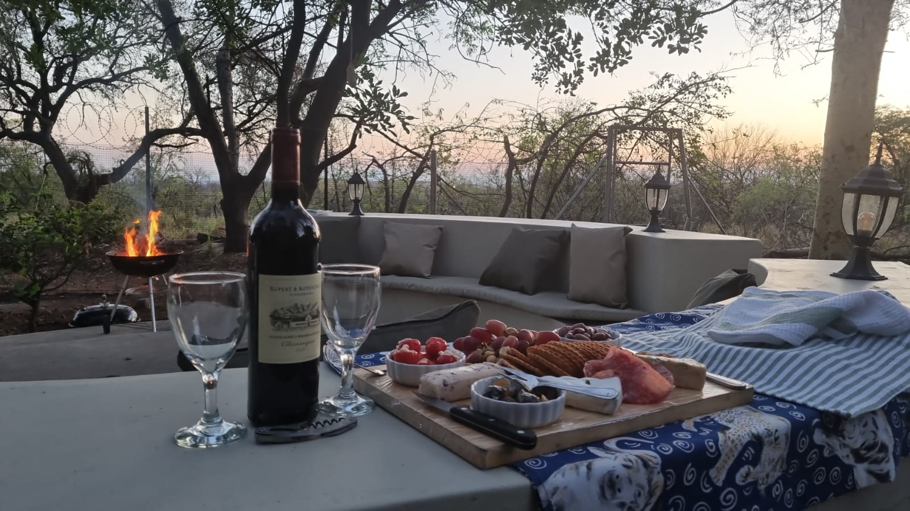

Boma Experience
Step into the Boma, where the warmth of firelight and the embrace of the open sky create a timeless gathering place. This outdoor sanctuary evokes the spirit of ancient traditions while offering modern comfort. At its heart, a crackling firepit invites storytelling, laughter, and quiet reflection, the flames dancing like gentle spirits in the night. Seating is arranged to encourage connection—plush cushions. Overhead, the stars stretch endlessly, mirrored by the glow of lanterns that cast a warm, welcoming light. The air carries subtle scents of wood smoke and the surrounding landscape, grounding you in nature while the fire and thoughtful design nurture a sense of intimacy and community. The Boma is more than an outdoor space—it is a living experience. Here, evenings unfold slowly, conversations linger, and every moment feels suspended between the magic of the fire and the serenity of the night.